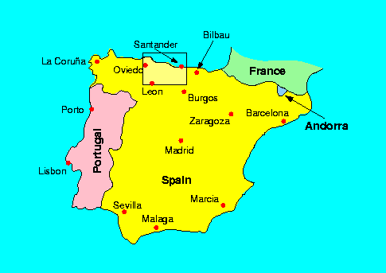
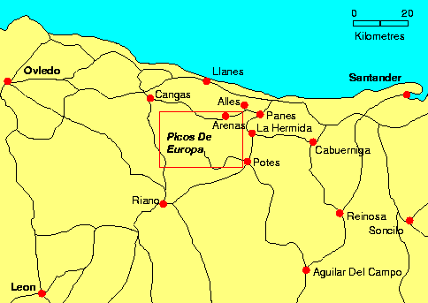
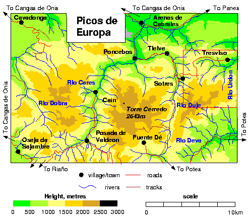
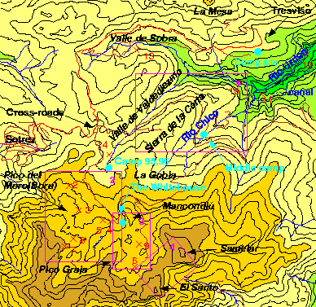

|
 |
 |
| Map of Spain | Map of Northern Spain |
When I say "I'm going caving in Spain" one of the questions asked is "Where?". My first answer is to say the North. For someone who knows Spain or is a caver this answer just isn't enough. The map of Spain shows an highlighted area in the north. Between Santander and Oviedo and a little inland are a range of mountains called the Picos De Europa. The location of the Picos are shown on the map of Northern Spain.
There are three Massifs in the Picos as shown on the map below. The Western Massif is to the west of the Rio Cares and has been explored by a selection of clubs including Oxford University Caving Club(OUCC), Seccion de Espeleologia Ingenieros Industriales(SEII), York University Cave and Pothole Club(YUCPC), Sociedad de Espeleologia Geologicas(SEG) and Speleo Club de Paris(SCP). The Central Massif is between the Cares Gorge and the Rio Duje and has been mainly explored by the Speleo Club de Seine(SCS). The Eastern Massif is to the East of the Rio Duje. LUSS have been exploring the Eastern Massif since the early seventies with the help of SEII.

The Eastern Massif is the area to the south of Sotres and Tresviso. Most of the caves drain into a river resurgence cave called Cueva del Agua near Tresviso and at an altitude of 454 metres. The heighest cave entrance that is worth mentioning is Sima 55 at an altitude of 2010 metres and is some 10 km away from the resurgence. This gives a possible vertical through trip of 1550 metres when the caves are connected. In the past decades we have managed to find caves like Sima 56 with a depth of 1169 metres. Cueva del Agua itself is several kilometres long and rises nearly 400 metres in altitude. The bottom of Sima 56 is lower than the top of Agua however there is still a lot of passage to be found since the nearest passage between the pot and the resurgence is seperated by about 3km. The relationship between the caves is shown in a elevation across the mountain.
The following map is an 8x8 km section of the picos. The map shows the area where almost all the caves associated with the LUSS expeditions to Tresviso are situated. In the LUSS journals are various sketch maps, a selection of these are marked on the map and are referenced below. A selection of the more major caves are indicated. There are many more caves marked on the sketch maps and some have just a described location- anyone feel like walking around the mountainsides for a few weeks with a GPS system?

| Area Maps | Selected Caves | |
|---|---|---|
|
|
|